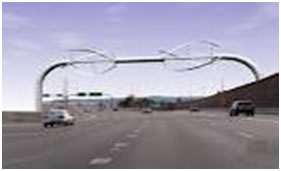

Lecture 03 :: Natural resources: forest, wildlife, energy and food resources

3.1. Forest:
It is a natural ecosystem having multispecies and multiage trees as dominant community. Forest covers about 1/3rd of the earth’s land surface of which about 50% is occupied by tropical forest. Thus forests are important in two ways ecologically and economically important.
Increased urbanization, industrialization and mining have entailed indiscriminate felling of trees and denudation of forests. The depleted forest wealth would simply deprive the man of economic and environmental values offered by forest Thus, forest ecology is a highly diverse and important branch of ecological study. The presence of trees makes forest ecosystems and their study unique.
Causes of Deforestation
Deforestation is a consequence of over-exploitation of our natural ecosystems for space, energy and materials. The basic reasons for such extensive deforestation are:
(1) Expansion of Agriculture:
Expanding agriculture is one of the most important causes of deforestation. As demands on agricultural products rise more and more land is brought under cultivation for which forests are cleared, grass-lands ploughed, uneven grounds leveled, marshes drained and even land under water is reclaimed. However, this expansion is usually marked with more ecological destruction than rationality. Governments often distribute land under forests to landless people, instead of redistributing already established farm-lands, howsoever, wasteful, unequal and unjust the distribution of ownership of land may be. During the process of clearing the land precious timber is simply burned. Ghana's 80% forests have disappeared but only 15% timber was harvested. Similarly in Brazil, little timber was extracted before the forests were burned for clearing the land.
(2) Extension of Cultivation on Hill Slopes:
Outside humid tropical zone, in most of the third world countries, major forests often occur on hill tops and slopes. Though agriculture has nearly always been concentrated on plains and floors of valleys, farming on narrow flat steps cut one after another across the slope or terrace farming is an age-old practice. It has never been extensive because of the gruelling labour and low productivity. However, the ever rising human numbers and their necessities have forced many to go up to mountain slopes for cultivation. More and more slopes are cleared of plants, steps carved out and against many odds cultivation is attempted. After a few crops the productivity declines and torrential sub-tropical rains carry down massive quantities of precious top soils to streams and rivers. While denuding hill slopes, the silt and sediments settle further down raising stream bottoms and river beds aggravating the flood situation.
(3) Shifting Cultivation:
Shifting cultivation or Jhum is often blamed for destruction of forests. In fact it is poor fertility of soil which has given rise to such a pattern of farming. A small patch of tropical forest is cleared, vegetation slashed, destroyed and burned. Crops are grown as long as the soil is productive, after which the cultivation is abandoned and cultivators move on to fresh patch of land. The abandoned land was allowed to lay fallow for long periods during which regrowth of vegetation took place and natural ecosystem was restored. Shifting cultivators, therefore, worked in harmony with nature. However, the demands of growing population have shortened the fallow periods drastically. The soil is unable to regain its fertility before it is put to use again.
(4) Cattle Ranching:
Large areas of tropical forests in North Eastern States have been cleared for use as grazing land to raise cattle and agricultural purpose. The soil degenerates within a short span of time due to over-grazing and massive soil erosion occurs.
(5) Firewood Collection:
To majority of rural population and a large number of people living in small towns and cities of developing countries, the only fuel is wood which is burned to cook food and to provide heat in chilly winters. Firewood collection contributes much to the depletion of tree cover, especially in localities which are lightly wooded. Denser forests usually produce a lot of combustible material in the form of dead twigs, leaves etc. There is hardly any need of cutting down live trees in densely wooded localities. However, in the case of lightly wooded forests, where the pressure of demand is usually higher, a slow thinning of woodland occurs due to regular foraging of villagers. In Madhya Pradesh, India, a recent observation revealed that felling of small trees for use as firewood and timber exceeds fresh plant growth. In some places in the state, the Government! Allows people to collect head loads of dead wood from forests for personal use.
(6) Timber Harvesting:
Timber resource is an important asset for a country's prosperity. Commercial wood finds ready national as well as international markets. As a consequence of which natural forests are being mercilessly exploited. Logging or felling of forest trees for obtaining timber is an important cause of deforestation in third world countries. Live trees with thick and straight trunks are felled and transported to commercial establishments elsewhere, to consumers who are ready to pay. In the process large stretches of forests are damaged and the system which could have provided resources worth much more to the local people is disrupted. Ironically the profits from timber trade are enjoyed by Governments, large companies or affluent contractors. Local people get a tiny share in the benefits while axing their own resource base.
Commercial logging in tropical countries usually involves felling of trees of only selected species which fetch better prices. This process of creaming or removing a few selected trees amidst dense vegetation on rather a delicate soil causes much more destruction than the actual number of trees or the volume of timber taken out would suggest. The selective harvesting practiced by loggers leave many forests permanently deficient in valuable plant species. Much of the West Africa has become useless for commercial logging as important plant species required by the loggers are not available. In Philippines, the valuable groups of tall trees (Dipterocarpus sp.) have shrunk from original 16 million hectares in 1960, to about one million hectares left standing in remote regions.
The practice of cutting down larger trees, of the selected species, leaving behind younger ones which can grow into fresh stock to be harvested later may appear rational. In theory such patch should become ready for reharvesting within thirty to forty years. However, in practice none of the loggers leaves the required number of younger trees and the notion that the woodland shall be ready for another valuable timber harvest in forty years appears to be a wistful thinking at its best.
Consequences of Deforestation
Forest Management
Of various factors employed in forest management, restrained felling, block and selective cutting, reforestation and recycling of forest products are most important practices.
3.2. Wild life
It was once customary to consider all undomesticated species of vertebrate animals as wildlife. Birds and mammals still receive the greatest public interest and concern, consistently higher than those expressed for reptiles and amphibians. Most concern over fishes results from interest in sport and commercial value. The tendency in recent years has been to include more life-forms under the category of wildlife. Thus, mollusks, insects, and plants are all now represented on national and international lists of threatened and endangered species.
People find many reasons to value wildlife. Virtually everyone appreciates the aesthetic value of natural beauty or artistic appeal present in animal life. Giant pandas, bald eagles, and infant harp seals are familiar examples of wild-life with outstanding aesthetic value. Wild species offer recreational value, the most common examples of which are sport hunting and bird watching.
Less obvious, perhaps, is ecological value, resulting from the role an individual species plays within an ecosystem. Alligators, for example, create depressions in swamps and marshes. During periods of droughts, these "alligator holes" offer critical refuge to water-dependent life-forms. Educational and scientific values are those that serve in teaching and learning about biology and scientific principles.
Wildlife also has utilitarian value which results from its practical uses. Examples of utilitarian value range from genetic reservoirs for crop and livestock improvement to diverse biomedical and pharmaceutical uses. A related category, commercial value, includes such familiar examples as the sale of furs and hunting leases.
To define as the uncultivated flora and the undomesticated fauna amongst the plants and animals or any form existing in natural surroundings, Provides aesthetic, recreations and economic benefits. For maintaining the balance of nature, wildlife plays an integral part. In biodiversity of life forms, India is the 2nd largest country in the world and Africa stands first.
Wildlife includes 350 spp of mammals, 1200 spp of birds and more than 20,000 spp insect and countless number of plant species. Today wildlife species are gradually disappearing and number is becoming reduced. Many species of wildlife have become the way of extinction.
Basic reasons for the extinction of wildlife:
i) Destruction of their natural habitat due to expanding agriculture, urbanization and industrialization.
ii) Overgrazing by domestic animals that convert the area into deserts.
iii) Hunting/poaching on a large scale for meat, fur, ivory etc-commercial exploitation.
iv) Export of some species.
v) An unbalanced sex ratio
vi) Some species are narrowly restricted to an area.
Vii) Natural processes are also cause a decline in the population. Low population may external and new population colonizes, when death exceeds birth rate.
Data regarding all endangered plant and animal species are recorded in red data book. According to RDB of IUCNNR (International Union for Conservation of Nature and Natural Resources) more than 1000 creatures are threatened with extinction. Among these, most immediate danger are all species of rhinoceros, Siberian tigers, Mexican gizzly bear, Red wolf, Mountain gorilla, Asiatic lion. In plants, more than 450 plant species are identified as endangered and threatened.
Wildlife Management and Conservation:
The conservation is the practice of preservation, maintenance, sustainable utilization, restoration and enhancement of the natural environment. Conservation is judicious management of resources towards their optimum utilization. Wild life management includes maintenance of habits suitable to the different species. Both governmental and non-governmental and voluntary organizations at state and central levels have been set up to protect wildlife. Ministry of Environment and Forest has been entrusted with the task of environmental protection.
Wildlife Management:
- Protection of natural habitats through controlled, limited exploitation of species.
- Maintenance of the viable number of species in protected areas (National Park, Sanctuary, Biosphere reserve etc.)
- Establishment of Biosphere Reserves for plants and animal species
- Protection through legislation.
- Improving the existing protected areas.
- Imposing restrictions on export of rare plant and animal species and their products.
- Educating public for environmental protection at all levels of education.
Governmental Organizations:
- Indian Board of Wildlife (IBWC), 1952
- Madras Wild Elephant Preservation Act, 1873
- All-India Elephant Preservation Act, 1879
- The Wild Birds and Animals Protection Act, 1912
- Bengal Rhinoceros Preservation Act, 1932
- Assam Rhinoceros Preservation Act, 1954
- Wildlife (Protection) Act, 1972
- Becoming a Part to CITES,1976
9. Committee for Biosphere Reserve, 1972.
10. Projects to conserve endangered species
Project Tiger
The main objective of Project Tiger is to ensure a viable population of tiger in India for scientific , economic , aesthetic , cultural and ecological values and to preserve for all time, areas of biological importance as a natural heritage for the benefit, education and enjoyment of the people. Initially, the Project started with 9 tiger reserves, covering an area of 16,339 sq.km., with a population of 268 tigers. At present there are 27 tiger reserves covering an area of 37761 sq.km., with a population of 1498 tigers. This amounts to almost 1.14% of the total geographical area of the country. The selection of reserves was guided by representation of ecotypical wilderness areas across the biogeographic range of tiger distribution in the country. Project Tiger is undisputedly a custodian of major gene pool. It is also a repository of some of the most valuable ecosystem and habitats for wildlife.
Tiger Reserves are constituted on a 'core-buffer' strategy. The core area is kept free of biotic disturbances and forestry operations, where collection of minor forest produce, grazing, human disturbances are not allowed within. However, the buffer zone is managed as a ‘multiple use area’ with twin objectives of providing habitat supplement to the spillover population of wild animals from the core conservation unit, and to provide site specific ecodevelopmental inputs to surrounding villages for relieving their impact on the core. Project Tiger has put the tiger on an assured course of recovery from the brink of extinction, and has resurrected the floral and faunal genetic diversity in some of our unique and endangered wilderness ecosystem. The population of tigers in the country has increased significantly to about 4000 from less than 2000 at the time of launch of the project
The effective protection and concerted conservation measures inside the reserves have brought about considerable intangible achievements also, viz. arresting erosion, enrichment of water regime thereby improving the water table and overall habitat resurrection. Labour intensive activities in tiger reserves have helped in poverty alleviation amongst the most backward sections, and their dependence on forests has also reduced.
IX PLAN ACHIEVEMENT OF PROJECT TIGER DIVISION
- During the VIII plan period the budget outlay for Project Tiger Scheme was Rs. 40.00 Crores. During the IX plan the budget outlay was substantially increased to rs. 75.00 Crores.
- During the IX Plan, Project Allowance to an extant of Rs. 3.95 Crores to field level
staff was funded under this scheme for the first time. - During this Plan period funds to an extant of Rs. 2.49 Crores has been released for creation of Strike Force to combat the growing insurgency and extremist situations within the Tiger Reserves.
- During the Plan period four new Tiger Reserves were declared, namely
No. |
Tiger Reserve |
State |
Year of Formation |
Area(sq. Kms.) |
Funds released |
1 |
Bhadra |
Karnataka |
1998-99 |
492 |
318.459 |
2 |
Pench |
Maharashtra |
1998-99 |
257 |
223.421 |
3 |
Pakui-Nameri |
Arunachal Pradesh / Assam |
1999-2000 |
1206 |
93.100 |
4 |
Bori-Satpura Panchmarhi |
Madhya Pradesh |
1999-2000 |
1486 |
75.220 |
|
|
|
|
3441 |
710.200 |
-
The effective protection and concerted conservation measures inside the reserves have brought about considerable intangible achievements also viz. arresting erosion, enrichment of water regime and thereby improving the water table and overall habitat resurrection. Labour intensive activities in tiger reserves have helped in poverty alleviation of the most backward sections and their dependence on forests has also reduced. The project has been instrumental in mustering local support for conservation programme in general.
- During the X Plan, it is envisaged to carry out on the Project with further impetus on people’s support for conservation of nature and natural resources.
India has taken several steps in recent times to protect the tiger and other wildlife species :
-
Setting up the Subramanium Committee to look into the issue of prevention of illegal trade in wildlife and wildlife products. The recommendations of this Committee are, however, yet to be enforced.
-
Setting up the J.J.Dutta Committee to review the management of the tiger project and suggest the future course of action.
-
Organising training of various enforcement agencies in the Wildlife Institute of India for species conservation.
-
Organising an enforcement training workshop in New Delhi, with the help of the US Fish and Wildlife Service and CITES for the enforcement agencies like Customs, Revenue Intelligence, Indo-Tibetan Border Police, Coast Gaurds, Border Security Force, State Police, Deputy Directors of Wildlife Preservation and Scientific Organisation like BSI and ZSI.
-
Setting up of a National Coordination Committee for the control of poaching and illegal trade in wildlife with enforcement agencies mentioned above as well as the Army, the Postal Department and so on.
-
The eco-development programme has been taken up around the major protected areas for winning over the support of the fringe dwellers to the cause of wildlife conservation including tiger under national schemes.
-
Initiating India's Eco-development Project under the Global Environment Facility (GEF) in seven protected areas which include seven prime tiger habitats (five tiger reserves).
-
Launching of a public awareness programme to involve NGOs and others for supporting the government in its efforts at tiger conservation.
-
Supporting programmes of some institutions and NGOs in exploring tiger trade routes and developing a forensic identification reference manual for tiger parts and products.
-
Taking initiatives with the Government of Nepal and Government of China to evolve an effective strategy to control trafficking of tiger products across international borders.
Gir Lion Project
Asiatic Lion habitat, distribution and population
Asiatic Lion at Gir
The Asiatic Lions habitat is dry scrub land and open deciduous forest. These lions were once found across northern Africa, south west Asia and northern Greece. Now there are only around 411 left in the wild and all of them are in or around the Gir Forest National Park. The first modern day count of lions was done by Mark Alexander Wynter-Blyth, the Principal of Rajkumar College, Rajkot sometime between 1948 to 1963, probably early in his tenure as the Principal during that period. Even though the Gir Forest is well protected, there are instances of Asiatic Lions being poached. They have also been poisoned for attacking livestock. Some of the other threats include floods, fires and the possibility of epidemics and natural calamities. Gir nonetheless remains the most promising long term preserve for them.
The Lion Breeding Programme creates and maintains breeding centres. It also carries out studies of the behaviour of the Asiatic lions and also practices artificial insemination. One such centre has been established in the Sakkarbaug Zoo at the district headquarters of Junagadh, which has successfully bred about 180 lions. 126 pure Asiatic lions have been given to zoos in India and abroad.
The census of lions takes place every five years. Previously indirect methods like using pugmarks of the lion were adopted for the count. However, during the census of April 2005 (which originally was scheduled for 2006, but was advanced following the reports and controversy over vanishing tigers in India), "Block-Direct-Total Count" method was employed with the help of around 1,000 forest officials, experts and volunteers. It means that only those lions were counted that were "spotted" visually. Use of "live bait" (a prey that is alive and used as a bait) for the exercise, though thought to be a traditional practice, was not used this time. The reason believed to be behind this is the Gujarat High Court ruling of 2000 against such a use of animals.
Gir National Park and Sanctuary does not have a designated area for tourists. However, to reduce the tourism hazard to the wildlife and to promote nature education, an Interpretation Zone has been created at Devalia within the sanctuary. Within its chained fences, it covers all habitat types and wildlife of Gir with its feeding-cum-living cages for the carnivores and a double-gate entry system.
The Government of India, with all its political will, is endeavouring to reinforce tiger conservation programmes in the country. The Ministry of Environment & Forests, has been convening regular meetings of the Steering Committee of Project Tiger and the Tiger Crisis Cell to introduce additional measures for the protection of the tiger and its habitat. The Union Home Minister has also issued a letter to all the Chief Ministers to take appropriate steps for conserving wildlife. Further, acknowledging the written request of the Ministry for according high priority to tiger conservation programmes in the wake of the renewed tiger crisis, the Prime Minister during the Indian Board of Wildlife meeting held in March, 1997 has assured full government support and also proposed to convene a meeting of chief ministers in the near future to discuss wildlife issues.
However, in order to resolve the present tiger crisis the following issues need special attention:-
- Since more than half of the tiger population of the country is found outside the tiger reserves, there is an urgent need to introduce a special programme for protection: One of the measures to counter the threat is to include more new areas into the fold of Project Tiger.
- To curb poaching in tiger reserves, it is necessary to create a "Strike Force" in every reserve.
- At least five tiger reserves, i.e. Palamau and Valmiki in Bihar, Manas (Assam), Indravati (M.P.) and Nagarjunsagar (Andhra Pradesh) are facing serious problems due to the insurgents/criminals seeking refuge in them. To bring about normalcy, deployment of central armed forces is urgently needed.
- In view of the large scale illegal trade of tiger parts in big cities, new strategies, based on identification of bottlenecks, need to be introduced. This would inevitably involve an in situ conservation mechanism, strengthening of Central Wildlife Enforcement Agencies and greater financial assistance to the states.
- In order to address all these issues, a substantial increase in the Project Tiger budget would be essential during the Ninth Plan period. A proposal to this effect has already been sent by the Ministry to the Planning Commission for allocating Rs.90 crores under the Project Tiger Scheme for the current Plan.
Biosphere Reserves:
Biosphere reserves programme was launched by UNESCO with the following objectives:
- Conserve representative samples of ecosystems
- Provide long-term in-situ conservation of genetic diversity
- Promote and facilitate basic and applied research and monitoring
- Provide opportunities for education and training
- Promote appropriate sustainable management of living resource
- Disseminate the experience so as to promote sustainable development
- Promote international co-operation
- It includes conservation, research, education and local involvement.
- Participation of local people in the management
- Research
- Monitoring
- Training and education through organizing environmental centers are among the important features of the programme.
- World: 234 BSR in 65 countries - covering 115 million ha.
- BSR - include natural, minimally disturbed, man modified and degraded ecosystem.
- India first Biosphere Reserve came into being in 1986 - Nilgiri BSR - covering 5520 km
- Second: Nanda Devi Biosphere reserves - 1560 sq.m.
- Third: Nokrek 1988 - Great Nicobar in 1989
- Ecological development programmes in the areas surrounding biosphere reserves.
Location of biosphere reserve in the country:
Biosphere reserve |
States / U.T |
|
Arunachal Pradesh |
|
Uttar Pradesh |
|
Tamil Nadu |
|
West Bengal |
|
Rajasthan |
|
Assam |
|
Gujarat |
|
Andaman and Nicobar |
|
Uttar Pradesh |
|
Assam |
|
Madhya Pradesh |
|
Meghalaya |
|
Karnataka, Kerala and Tamil Nadu |
For management of endangered species especially, medicinal plants, programmes on biology and tissue culture have to be initiated to conserve in situ and mass multiplication of species. The programme includes identification and enumeration of eco-system on regional basis, systematic studies on reproductive biology, gene pool conservation, artificial propagation in natural habitats, development of tissue culture techniques for mass multiplication and domestication and cultivation of selected threatened species.
Mangrove Forest
Mangroves (generally) are trees and shrubs that grow in saline (brackish) coastal habitats in the tropics and subtropics. The word is used in at least three senses: (1) refers to the habitat and entire plant assemblage or mangal, for which the terms mangrove swamp and mangrove forest are also used, (2) refers to all trees and large shrubs in the mangal, and (3) refers to the mangrove family of plants, the Rhizophoraceae, or even more specifically just to mangrove trees of the genus Rhizophora. Mangals are found in depositional coastal environments where fine sediments, often with high organic content, collect in areas protected from high energy wave action.
Above and below water view at the edge of the mangal
About 110 species have been identified as belonging to the mangal. Each species has its own capabilities and solutions to these problems; this may be the primary reason why, on some shorelines, mangrove tree species show distinct zonation. Small environmental variations within a mangal may lead to greatly differing methods of coping with the environment. Therefore, the mix of species at any location within the intertidal zone is partly determined by the tolerances of individual species to physical conditions, like tidal inundation and salinity, but may also be influenced by other factors such as predation of plant seedlings by crabs.
A cluster of mangroves on the banks of the Vellikeel River in Kannur District of Kerala,
Once established, roots of mangrove plants provide a habitat for oysters and help to impede water flow, thereby enhancing the deposition of sediment in areas where it is already occurring. Usually, the fine, anoxic sediments under mangroves act as sinks for a variety of heavy (trace) metals which are scavenged from the overlying seawater by colloidal particles in the sediments. In areas of the world where mangroves have been removed for development purposes, the disturbance of these underlying sediments often creates problems of trace metal contamination of seawater and biota.
Mangroves protect the coast from erosion, surge storms (especially during hurricanes), and tsunamis. Their massive root system is efficient at dissipating wave energy. Likewise, they slow down tidal water enough that its sediment is deposited as the tide comes in and is not re-suspended when the tide leaves, except for fine particles. As a result, mangroves build their own environment. Because of the uniqueness of the mangrove ecosystems and their protection against erosion, they are often the object of conservation programs including national Biodiversity Action Plans.
Despite their benefits, the protective value of mangroves is sometimes overstated. Wave energy is typically low in areas where mangroves grow, so their effect on erosion can only be measured in the long-term. Their capacity to limit high-energy wave erosion is limited to events like storm surges and tsunamis. Erosion often still occurs on the outer sides of bends in river channels that wind through mangroves, just as new stands of mangroves are appearing on the inner sides where sediment is accreting.
Mangroves support unique ecosystems, especially on their intricate root systems. The mesh of mangrove roots produces a quiet marine region for many young organisms. In areas where roots are permanently submerged, they may host a wide variety of organisms, including algae, barnacles, oysters, sponges, and bryozoans, which all require a hard substratum for anchoring while they filter feed. In some cases, export of carbon fixed in mangroves is important in coastal food webs. The habitats also host several commercially important species of fish and crustaceans. Despite replanting programs, over half of the world's mangroves have been lost in recent times.
The Sundarbans is the largest mangrove forest in the world, located in the Ganges delta in Bangladesh and West Bengal, India. There are major mangals in the Andaman and Nicobar Islands and the Gulf of Kutch in Gujarat. Other significant mangals include the Bhitarkanika Mangroves and Godavari-Krishna mangroves. The Pichavaram Mangrove Forest near Chidambaram, South India is the second largest mangrove forest in the world. It is home to a large variety of birds—local resident, migratory resident and the pure migratory birds—and is separated from the Bay of Bengal by a lovely beach. It is one of those rare mangrove forests which has actually increased by 90% between 1986 and 2002.
3.3.Energy sources
Fossil fuels such as coal, gas or oil represent the principal source of energy and supply about eighty five per cent of the commercial energy requirement. Fossil fuels are types of sedimentary organic materials, often loosely called bitumens, with asphalt, a solid, and petroleum, the liquid form. More correctly bitumens are sedimentary organic materials that are soluble in carbon disulfide.
Petroleum consists largely of paraffins or simple alkanes, with smaller aromatic compounds such as benzene present in most crude oils. Natural gas is an abundant fossil fuel that consists largely of methane and ethane, although traces of higher alkanes are present. Coal, unlike petroleum, contains only a little hydrogen. Fossil evidence shows that coal is mostly derived from the burial of terrestrial vegetation with high proportion of lignin and cellulose.
Nuclear power is an attractive alternative to fossil fuels and considered as "the clear energy alternative". Damming rivers to create hydroelectric power from spinning water turbines has the attraction of providing a low-cost, renewable, air pollution-free energy source.
There are several sustainable, environmentally benign energy sources that should be developed. Among these are wind power, biomass (burning renewable energy crops such as fast-growing trees or shrubs), small-scale hydropower (low head or run-of the river turbines), passive-solar space heating, active-solar water heaters, photovoltaic energy (direct conversion of sunlight to electricity), and ocean tidal or wave power. A big disadvantage is that most of these alternative energy sources are diffuse and not always available when or where we want to use energy.
Other possibilities include converting biomass into methane or methanol fuels or using electricity to generate hydrogen gas through electrolysis of water. These fuels would be easily storable, transportable, and used with current technology without great alterations of existing systems.
Conventional exhaustible energy sources:
a) Fire wood:
Man has been logging down the trees for various purposes including to get firewood as an important one. This lead to thinning of woodland that had serious consideration from both ecological and economic viewpoints. The only way out to the problem is making available to the village the cheaper non-conventional energy sources, such as biogas and solar energy in usable form.
b) Fossil fuel :
Are the most extensively used sources of energy today. Increase in population and percapital energy demand coupled with the industrialization at a faster rate are factors responsible for depletion of fossil fuel. Petroleum and natural gas to-day fulfill 60% of the world’s total energy requirements. If the exploitation and consumption of these resources continues at the present incredible rate, there supply may lost only for a few more decades.
Non-conventional and in-exhaustible energy sources:
The rapid depletion of conventional energy sources has promoted governments and people to concentrate on finding and tapping some non-conventional energy sources that may last for long. The in-exhaustible energy sources like solar, hydal, tidal, wind and atomic power, can only bring hope for the sustained socio-economic development of humanity.
a) Solar energy:
Research and application in the field of solar energy have opened new vistas in the direction of fulfilling world’s future energy requirements. It is especially drawn attention for its practically free steady supply and pollution free use. This resource can especially be tapped more effectively in the regions where there are long run shine hours. Department of non-conventional energy sources of Government of India has prepared a prespective plan that envisages generation of energy through non-conventional sources. Chiefly solar, to the extent of 250 million tons of coal replacement per annum
b) Wind Power:
The power of wind is being used in running mills, irrigation of fields and carrying out other farm activities. According to DNES, Government of India, 20,000 MW electricity can be generated from the wind alone.
|  | |
c) Hydro power:
It is considered to be the cheapest source of electricity. The Brahmaputra basin has the highest hydropower potential and nearly 30% of the country’s production. Next to it rank the Indus, Godavari and Ganga basins respectively. Apart from economic consideration development of such projects is beneficial for irrigation and other purposes.
d) Atomic power:
Atomic power appears to be the only hope for large-scale energy requirements when fossil fuels are exhausted. Atomic energy has its application not only in generation of electricity but has successfully been used in chemical and food processing industry. The important constraints in atomic energy generation are cost of construction and maintenance of plants and also disposal of radioactive wastes.
e) Bio-energy:
Organic wastes provide an important renewable source of energy. It is considered to be advantageous in view of its relatively cheaper supply, and are of organic wastes in its generation reduces the impending threat of pollution due to their release in environment. As such, it serves two purposes; fuel production and waste disposal. It has more practical applicability in villages where organic waste, in the form of cattle dung, is available in plenty. Biogas so generated is thus economic and convenient to use as compared to conventional practice of burning of dry dung cakes.
Since the total natural resources available are limited, the way-out to the problem seems only through control of population and also the per capita consumption of resources. Because it is difficult to bring down per capita consumption, the recycling and stringent conservation can bring hope for sustained development without reducing per capita use of resources.
3.4. Food Resources
We have thousands of edible plants and animals over the world, out of which only about three dozen types constitute the major food of humans. The main food resource include wheat, rice, maize, potato, barely, oats, cassava, sugarcane, pulses, sorghum, millet, about 20 or 50 common fruits and vegetables, milk, meat, fish and sea food. 76% of world food is produced from croplands and most it produced grains. About 17% of world food is obtained from Rangeland (Meat etc). Seven % of world food supplied by oceanic fisheries. About 30,000 plant species are eatable. 2/3 of the people used traditional grains (rice, wheat etc.,). People consume more beef, pork, chicken; egg etc., Fish and sea food are the important sources of food. Milk products are also widely used.
World Food Problems
- The world population increases and cultivable land area decreases.
- Due to the inadequate rainfall, the productivity of food is reduced by every year.
- Environmental degradation like soil erosion, water logging, water pollution, salinity, affects agricultural lands.
- Urbanization is another problem for the reduction of agricultural lands.
Indian Scenario
- India is the 3rd largest producer of crops, but 300 million Indians are still undernourished
- Land wise, India is only half as much of USA, but population wise three times higher.
- Food problem is directly related to population growth.
Under Nutrition and Malnutrition
To maintain good health and resistant disease, we need large amount of macronutrients such as carbohydrates, proteins, fats and smaller amount of micronutrients such as vitamins A,C and E and minerals such as iron, calcium and iodine.
a) Under nutrition
- The Food and Agriculture Organization (FAO) of United Nations estimated that on an average, minimum calorie intake on a global scale is 2,500 calories per day.
- Peoples receiving less than 90% of these minimum dietary calories are called under nourished.
- If it is less than 80% that are said to be seriously undernourished.
- People who cannot buy enough food to meet their basic energy needs (carbohydrates) suffer from under nutrition.
Effects
They are suffering from mental retardation and infectious diseases such as measles and diarrhea.
b) Malnutrition
- Besides, the minimum calorie intake, we also need proteins, minerals etc.,
- Deficiency or lack of nutrition often leads to malnutrition.
Effects of malnutrition
S.No |
Deficiency of nutrient |
Effects |
1 |
Proteins |
Growth |
2 |
Iron |
Aneamia |
3 |
Iodine |
Goitre, Cretinism |
4 |
Vitamin A |
Blindness |
- Thus chronically under nourished and malnourished people are diseases prone
and are too weak to work or think clearly.
- The world Food summit,1996 has set the target to reduce the number of under
nourished to just half by 2015 which still means 410 million undernourished people on the earth.
Food Distribution around the World and Their Problems
- During the last 50 years world grain production has increased almost three times. But, at the same time, population growth increased at such a rate in LDCs (Less Developed Countries).
- Every year 40 million people (50% of children (15 year ) die on undernourishment and malnutrition. This means that every year our food problem is killing as many people were killed by the atomic bomb dropped on Hiroshima during World War II.
- In countries like North America and Europe the daily average calorie intake is about 3500 cals, which is nearly one-third more than that required for healthy living.
Indian Scenario
Although India is the third largest producer of stable crops, an estimated 300 million Indians are still undernourished. Indians has only half as much land as USA, but it has nearly three times population to feed. Our food problems are directly related to population. The world Food summit, 1996 has set the target to reduce number of under nourished to just half by 2015, which still means 410 million undernourished people on the earth.
| Download this lecture as PDF here |